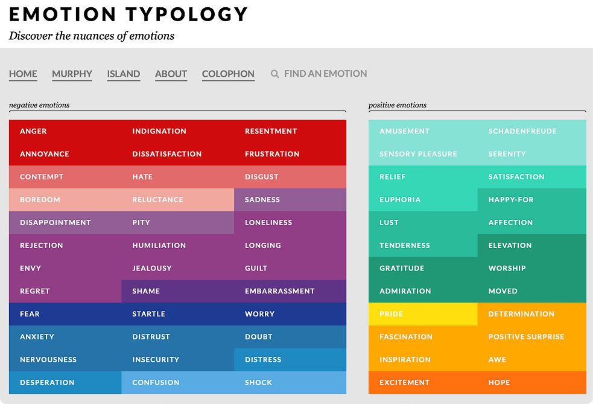

Carddeck

Voor dit project heb ik een carddeck ontworpen over het onderwerp Typology of Emotions. Het doel was om theorie en kennis over emoties te vertalen naar duidelijke, praktische kaarten die ontwerpers kunnen gebruiken. Elke kaart moest uitleg en voorbeelden bevatten, zodat iemand zonder voorkennis het onderwerp kon begrijpen en toepassen.
We gebruikten hiervoor de S.Ex.I.-methode (State, Explain, Illustrate):
- State: benoem het begrip of de theorie.
- Explain: leg het uit in je eigen woorden.
- Illustrate: geef voorbeelden of visuals die het verduidelijken.
Daarnaast moest de card ook relevant zijn voor ontwerpers, met concrete tips, do's & don'ts en voorbeelden uit de praktijk.

Ik heb gekozen voor Typology of Emotions, omdat emoties ook in mijn eigen leven een grote rol spelen. Soms vind ik het lastig om te begrijpen of te herkennen wat ik voel en hoe ik daarmee moet omgaan. Door dit onderwerp te onderzoeken, wilde ik beter leren begrijpen wat emoties zijn en hoe ze invloed hebben op mensen en op ontwerp. Ik heb mijn carddeck zelf ontworpen in Figma, zodat ik de informatie op een visuele manier kon verwerken. Dat hielp mij om de theorie beter te onthouden. Door de do's en don'ts en concrete voorbeelden uit te werken, kon ik de kennis niet alleen toepassen op design, maar ook beter begrijpen hoe emoties in het algemeen werken.
Ik begon met het onderzoeken van het onderwerp. Ik heb verschillende bronnen over emoties gelezen en simpel samengevat op mijn kaarten. Tijdens mijn onderzoek heb ik alle verschillende emoties bekeken die er bestaan. Sommige kende ik nog niet eens bij naam, en ik wist ook niet dat elke emotie een eigen kleur had. Door mijn research weet ik nu beter wat emoties betekenen, hoe ze ontstaan en hoe je ermee kunt omgaan.
Bij het maken van de kaarten moest ik theorieën over emoties visueel en eenvoudig weergeven. Ik heb gebruikgemaakt van de website emotiontypology.com, waar ik inspiratie haalde uit de kleurenschema's en de manier waarop emoties daar eenvoudig worden uitgelegd. Dat hielp mij om mijn eigen kaarten duidelijker en toegankelijker te maken.
Daarnaast heb ik gebruikgemaakt van storytelling, zodat de uitleg niet alleen informatief was, maar ook herkenbaar en makkelijk te begrijpen. Door kleine voorbeelden of korte situaties toe te voegen, kon ik laten zien hoe een emotie in de praktijk voorkomt.
Omdat het onderwerp draaide om kaarten, wilde ik dat mijn prototype ook echt aanvoelde als een echte set speelkaarten. Daarom heb ik geprobeerd om het ontwerp zo vorm te geven dat het lijkt alsof je echte kaarten in handen hebt — bijvoorbeeld door het gebruik van afgeronde hoeken, een herkenbare achterkant en een 'flip'-effect in de digitale versie.
Door te werken aan een realistisch prototype kon ik beter nadenken over vorm, gebruikservaring en presentatie. Het hielp mij om te begrijpen hoe een fysiek product digitaal overtuigend kan worden weergegeven. (Bekijk prototype)
Ik vond het project erg interessant, vooral omdat het ook iets persoonlijks voor mij is. Emoties spelen een grote rol in mijn dagelijks leven, en soms weet ik niet goed wat ik voel of hoe ik ermee om moet gaan. Door dit project kan ik nu terugkijken naar mijn bronnen en zien hoe ik met een emotie kan omgaan als ik het even niet weet.
Het onderzoeken van emoties en hun betekenissen was leerzaam. Ik wist bijvoorbeeld niet dat elke emotie een eigen kleur of sfeer kan hebben, en dat ontwerpers dit bewust kunnen gebruiken om bepaalde gevoelens over te brengen.
In het begin wist ik niet goed hoe en waar ik moest beginnen. Het maken van de kaarten was lastig, vooral om de theorie duidelijk en eenvoudig te laten zien. Maar door te schetsen, feedback te vragen en aan te passen, werd het steeds beter. Toen het prototype echt op een set speelkaarten leek, vond ik dat een groot succes.
Ik heb geleerd dat theorie pas echt handig is als je het kunt uitleggen en omzetten naar iets dat anderen kunnen gebruiken. Ook heb ik ontdekt dat ik visueel sterker ben dan ik dacht. Het combineren van onderzoek, vormgeving en storytelling vond ik heel leuk.
Als ik dit opnieuw doe, zou ik de kaarten vaker laten testen door echte ontwerpers of gebruikers.